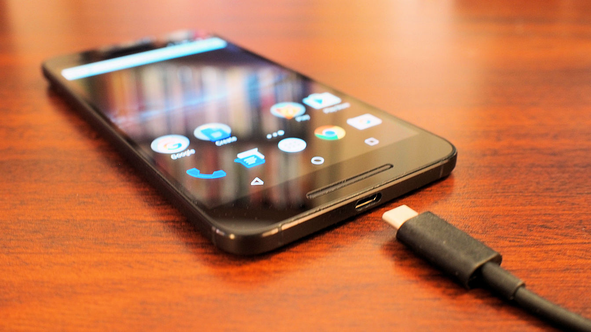

Should My Charging Adapters Plugged in Or Not?

Suppose you have a mobile or tablet charger attached to the wall socket, but the device is not connected there, then it would be okay to have the charger attached? How much electricity can you consume in this case? Today we will discuss, how reasonable is it to keep the charger in the wall socket or plug even after charging, is it increasing our electricity bill in a month?
There is a lot of controversy over the power consumption in such stand-by mode of charger. Many people think that if it is plugged-in to the charger socket, it often consumes power like a monster, it is also called “vampire power”. However, in standby mode, you can find out today whether they consume power like a monster at all.
There are some devices such as routers or TV cards. The adapters that come with them can also be compared to chargers. But they always keep the device running by providing a standard amount of electricity, which is why they always consume the same amount or more of electricity as charging a mobile.
The matter can be analyzed very easily through some electrical tests. At present, global electricity is billed in kilowatt-hours per unit. Here, the use of 1 thousand watts of electricity per hour is called 1kwH, which we know as a unit. Using a wattmeter device, it is possible to know how many watts the charger is consuming.

If you put the charger in the socket, the amount of bill will come
If the genuine charger of the iPhone is taken as an example here, it is known from experimental data – the charger of the iPhone consumes 130 watts of electricity per month. As a result, for 12 months of the year, if you just put the charger in the socket for a year, the genuine charger of the iPhone will consume 1.5KwH or 1.5 units of electricity. The electricity bill in Bangladesh depends on the amount of electricity used by each household. If you spend 6-200 units of electricity, the bill will be 5 rupees 14 paise, if you spend 201-300 units, the bill will be 5 rupees 38 paise per unit, if you spend 301-400 units, the bill will be 5 rupees 60 paise per unit and the cost will be 401 units. If you do, the Prodi unit will come at 6 rupees 60 paise.
201-300 units of electricity is used per month in the home or office, and in that case, if the iPhone charger is only connected to the socket in a year, it will cost (1.5 times 5.36), so it is 7.04 rupees. Which is only insignificant money in a year in our country. In the same case, if you put the charger in the socket all year round in a large factory, where the bill per unit is higher – it will cost only 12.9 rupees.
Decision
It is not a matter of in-depth discussion about putting the phone in the socket towards the charger even after charging. If the genuine charger of a modern iPhone is left in the socket all year round, it will cost only 8 to 12 rupees. The charger of other mobiles including Android will do the same. So if you find it difficult to keep the charger on and off again and again – you can always keep it on. And because of this, a little bit of bill will come, but it is very little in a year
So friends, if you put the charger on, it consumes the same power as it consumes while charging – the idea is wrong. You can still put the charger in the socket after charging. However, in many cases, if there is a problem with the power line, such as thunderstorms, voltage ups and downs, I do not always recommend to put it in the socket. Moreover, you can put a mobile charger in the stable electricity connection. Some larger devices have chargers that would be better to keep open after charging, in many cases consuming “vampire power”. Various lead-acid battery chargers should be left open at the end of charging. These consume much more power than mobile chargers even in standby mode.
Find out more